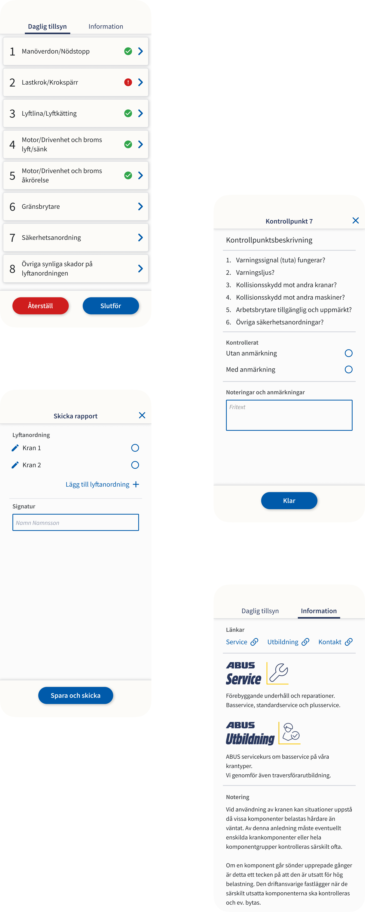

ABUS Kransystem AB
UX, UI, WebApp
The client is requesting a mobile application where crane operators can document daily inspections of lifting equipment, which is currently done using paper and pen. These reports will then be exported as PDFs and forwarded to the responsible person at their workplace.
My task is to create a straightforward user flow with an easy-to-use graphical user interface based on the needs of the customer and users.
